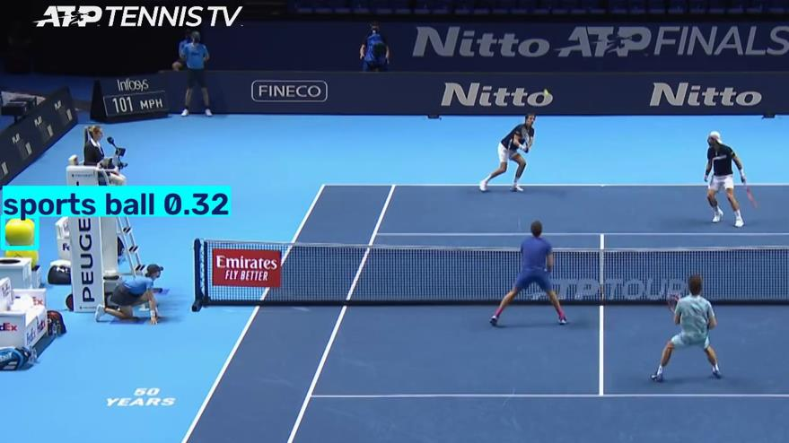
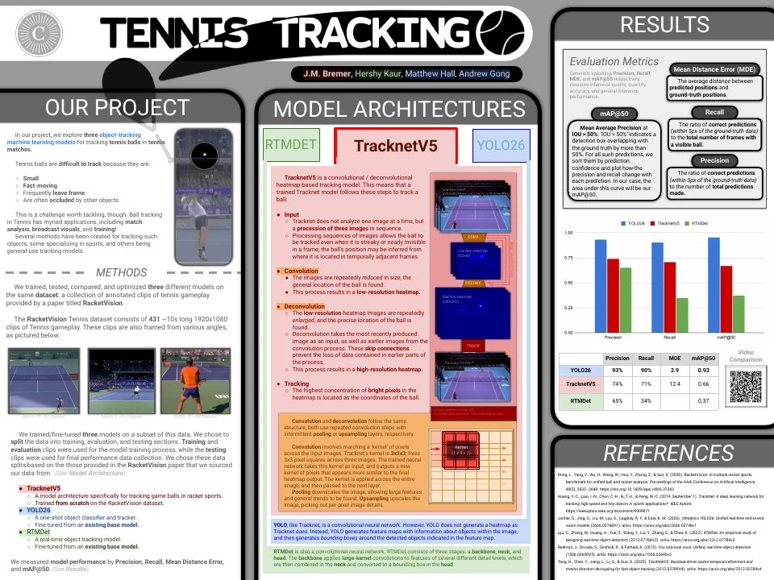
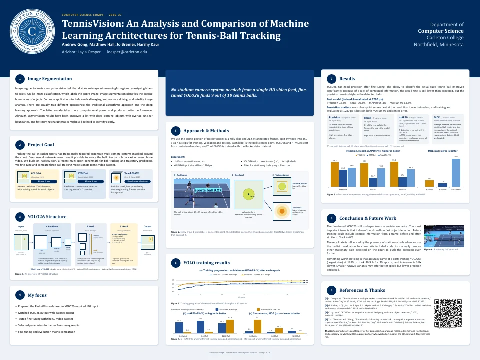
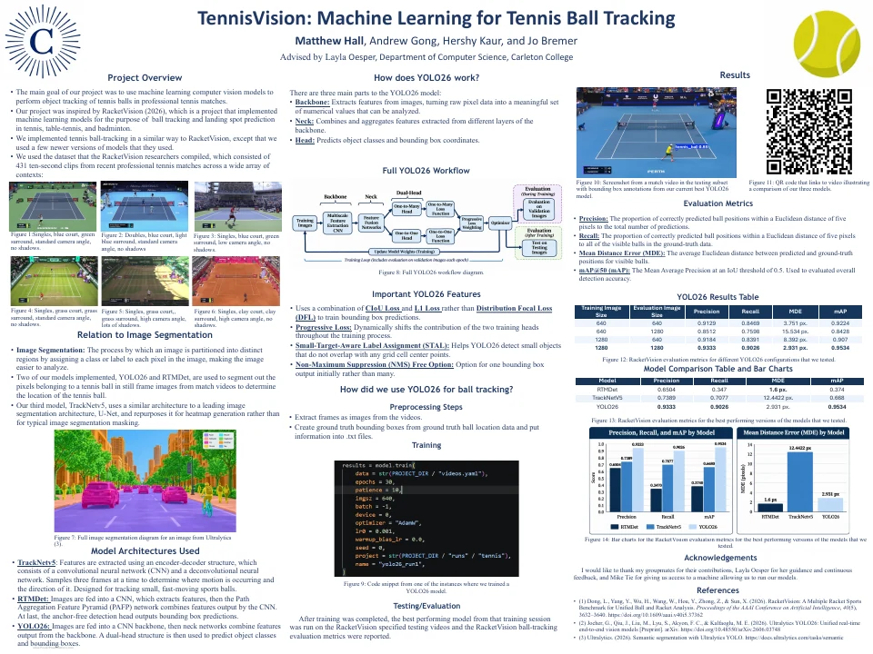
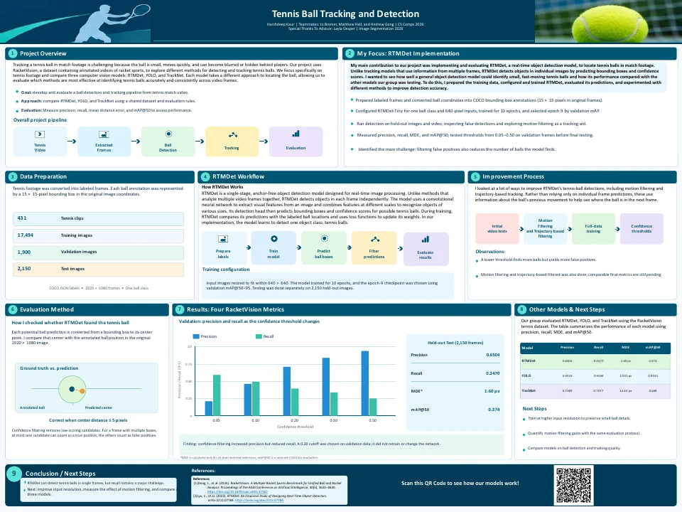

Single frame · Bounding box
YOLO26x
Images are fed into a CNN backbone, then neck networks combine features output from the backbone. A dual-head structure is then used to predict object classes and bounding boxes.
YOLO26 paperTracking a tennis ball in match footage is challenging because the ball is small, moves quickly, and can become blurred or hidden behind players.
We study how deep learning models can track a tennis ball from a single broadcast video and compare three model architectures trained on the same dataset. Using the tennis subset of the RacketVision dataset and its official data split, we fine-tuned YOLO26 and RTMDet, and trained TrackNetV5.
YOLO26x, fine-tuned at a 1,280-pixel input resolution, has the highest precision, recall, and mAP50. We observed that the remaining failures mainly involve motion blur in fast moving balls and stationary balls lying on the side of the court.
| Model | Precision % | Recall % | mAP50 % | MDE px |
|---|---|---|---|---|
| YOLO26x20 × 20 px evaluation boxes | 93.33 | 88.39 | 93.20 | 6.549 |
| TrackNetV5 | 73.9 | 70.8 | 66.8 | 12.44 |
| RTMDet-Tiny | 85.8 | 65.4 | 71.8 | 15.69 |
Images are fed into a CNN backbone, then neck networks combine features output from the backbone. A dual-head structure is then used to predict object classes and bounding boxes.
YOLO26 paperFeatures are extracted using an encoder-decoder structure, which consists of a convolutional neural network (CNN) and a deconvolutional neural network. Samples three frames at a time to determine where motion is occurring and the direction of it.
TrackNetV5 paperThe model uses a convolutional neural network to extract visual features from an image and combines features at different scales to recognize objects of various sizes. Its detection head then predicts bounding boxes and confidence scores for possible tennis balls.
RTMDet paperTennis footage was converted into labeled frames. Each ball location annotation was a single pixel (x, y) coordinate in the RacketVision ground-truth data.
RacketVision paper| Split | Clips | Annotated frames |
|---|---|---|
| Training | 350 | 17,494 |
| Validation | 38 | 1,900 |
| Test | 43 | 2,150 |

“We observed that the remaining failures mainly involve motion blurs in fast moving ball and stationary ball lying on the side of the court.”
From the team’s write-up

TrackNetV5 and heatmap tracking

YOLO26x resolution experiments

YOLO26 architecture and workflow

RTMDet-Tiny implementation
The posters document earlier experiments. The results table reports the team’s final test comparison.